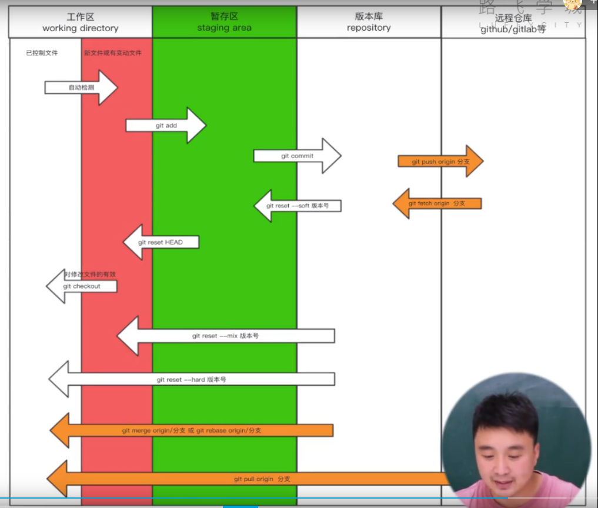

Git：分布式版本控制软件
这意味着，本地也会有版本控制仓库（V1、V2、V3版本），本地修改后，一般先（把V4）提交到本地的版本控制仓库，再（把V4）推送到中心服务器仓库。
官网
git的相关工作区域

工作区
已入版本库
新修改
暂存区
版本库
FIRST COMMAND
git --version
git --help
git help xxx
全局初始化
配置文件相关
项目配置文件
文件位置：当前项目文件/.git/config
--local
全局配置文件
- 文件位置：~/.gitconfig
--global
系统配置文件
文件位置：/etc/.gitconfig
--system
个人信息配置
git config --global user.name "Hasee"
git config --global user.email "940@qq.com"
验证配置：
git config --global --get-all user.name
git config --global --get-all user.email
git config --list
开始仓库
开始仓库有两种方法：
创建新的仓库
克隆仓库
下面介绍创建新的仓库，克隆仓库见Github克隆仓库。
仓库初始化
进入仓库目录
git init
初始化后产生.git文件夹。
.git文件夹：存放着Git管理信息的目录，初始化仓库时会自动创建。 如果想移除仅仅移除git而保留项目文件，则只需要删除.git文件夹即可。
另外，可用自行创建.gitignore文件，里面放着git忽略的文件（git不管理的文件），一个文件一行，可以用通配符。
日常使用
参考git相关工作区域部分。
检测文件的状态
git status
如果没有修改或者已经commit了，则不显示
如果修改了还未add，则显示红色modified
如果修改了，add了，但是没有commit，则显示绿色modified
git diff
只显示修改了还未add的具体修改情况。
查看版本信息
git log
git log --graph --pretty=format:"%h %s"
git reflog # 可以查看被reset的版本，即之后的版本
不同文件状态之间的反复横跳
恢复回原始文件
git checkout -- xxx
修改了未add的，恢复成未修改的状态
添加到本地库暂存区
git add xxx
git add .
本地库暂存区退回工作区修改状态
get reset HEAD
提交到本地版本控制仓库（生成版本）
git commit -m "注释xxx"
从版本控制仓库退回到暂存区
git reset --soft 版本hash
从版本控制仓库退回到工作区修改状态
git reset --mix 版本hash
版本回滚【完整回滚至工作区】
git reset --hard 版本hash
分支相关
git的后一个版本只保存修改的位置，没修改的地方回通过一个指针指向前一个版本。
主分支一般默认是master。
查看分支
git branch
其中带*的绿色的是当前分支。
创建分支
git branch xxx
新创建的分支指向当前分支的当前版本。
删除分支
git branch -d xxx
切换分支
git checkout xxx
合并分支
git merge xxx
将xxx分支的内容合并到当前分支上。
合并的时候可能出现冲突，解决方法是手动修复，然后重新提交（add、commit）。
解决冲突的高阶操作见配合Beyond Compare解决冲突。
变基
作用是将多个提交记录合并成一个。
申请合并
git rebase -i 版本Hash
从该版本到现在的提交记录合并
git rebase -i HEAD~3
最近三次提交合并
修改合并后的记录情况
将
pick 123231
pick 123232
pick 123233
修改为：
pick 123231
s 123232
s 123233
pick是保留的版本，其他的改为s。
commit提交。
版本标签相关
可以认为是版本的别名，在Github上可以显示。
git tag -a v1 -m "xxx"
在本次记录上打一个tag标签
推送到远程
git push origin --tags
Github配合
连接到Github上
本地创建密钥
ssh-keygen -t -rsa -C "940@qq.com"
在~.ssh目录中（如C:\Users\zqg.ssh），生成了id_rsa和id_rsa.pub文件。其中前者是私钥，后者是公钥。
将密钥上传到Github上
在Github-头像-Settings-SSH and GPG keys-New SSH key，添加公钥的内容。
测试联通性
ssh -T git@github.com
与远程库关联
检查本地的库是否已经关联
git remote -v
添加关联
git remote add origin "http://github.com/zqg/test.git"
意思是添加了一个本地标识（别名）：origin，这个别名指向后面的URL。
删除关联
git remote remove origin
推送
完整写法：
git push origin main master
origin是关联的本地标识，main是本地分支，master是远程分支。
远程分支可以缺省，则与本地同名。
git push -u origin main master
-u意思是设为默认，以后可以直接缺省推送：
git push
拉取
克隆（首次拉取）
git clone http://github.com/zqg/test.git ./
./可以缺省，则在当前目录下创建一个子文件夹，名字为远程库名。
此时，拉取的仓库只显示master分支，但是依然可以直接切换分支。（只是切换前不显示而已）
往本地仓库拉取合并
git pull origin xxx
这个命令等同于：
git fetch origin xxx
git merge origin origin/xxx
或者
git fetch origin xxx
git rebase origin/xxx
其中，fetch是把远程仓库拉到本地版本库，merge是把本地版本库放回本地工作区。
协同工作
在Github-头像-Settings-Collaborators，邀请用户即可添加协同工作者。
高阶操作
配合Beyond Compare解决冲突
git config --global merge.tool bc
git config --global mergetool.path 'D:\BeyondCompare\BCompare.exe'
git config --global mergetool.keepBackup false
使用方法：
git mergetool